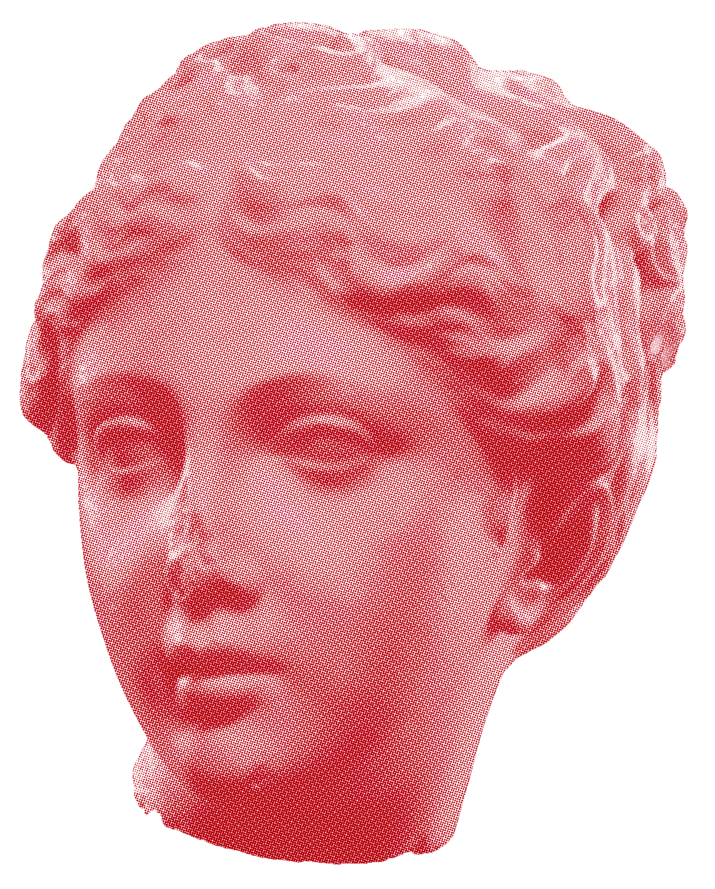
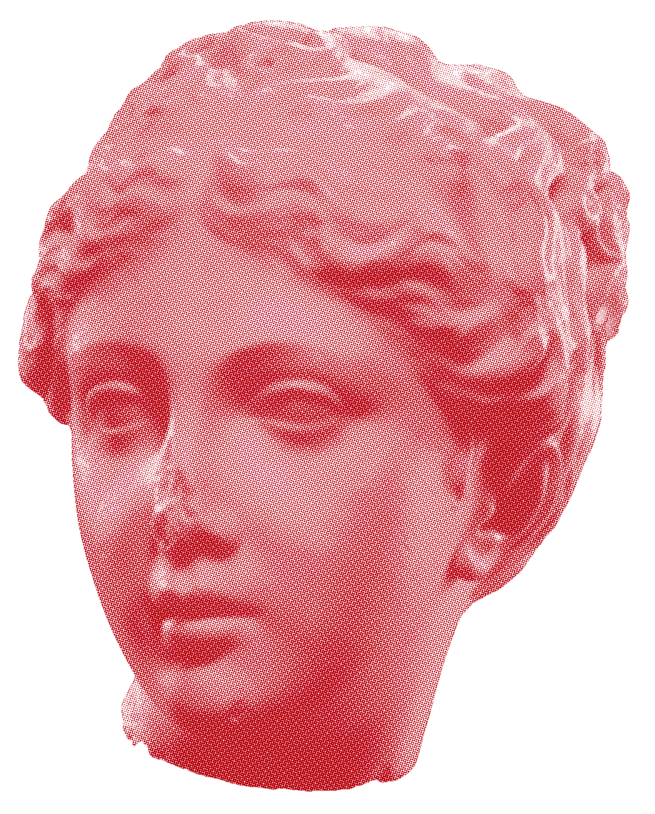

Venus was the Roman goddess of love, maternal care, sexual reproduction, and erotic desire. The loveliest of all deities, Venus desired—and was desired by—mortals and gods alike. Like the Greek Apollo, Venus had a fluid sexuality and embraced male and female lovers alike. She was also the guardian of lovers and prostitutes, and a major figure in Roman religion. Venus was adapted from the Greek goddess Aphrodite, with whom she shared a mythological tradition. Venus was formally incorporated and adopted into the Roman pantheon in the third century BCE. During the Punic Wars of the second and third centuries BCE, Venus was thought to lend her assistance to the Romans and ensure their victories over the Carthaginians. Her importance as a figure of worship peaked shortly thereafter, though she continued to be venerated until the rise of Christianity in the fourth century CE. Revered for bringing victory to the Romans, Venus was also celebrated as the mother of Aeneas, the ancestor of Romulus, the founder of Rome. In later years, Julius Caesar publicly linked his family’s heritage to the goddess’ maternal line, making Venus the progenitor of the first imperial dynasty. As the goddess of love and sex, Venus possessed the ability to make mortals and gods fall madly in love. Venus’ chief weapons were her charm and erotic appeal, and in her mythological tradition, many fell victim to them.
 
